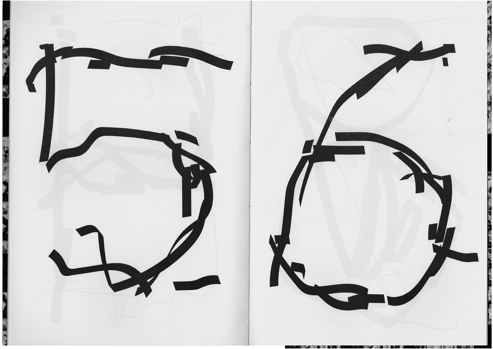
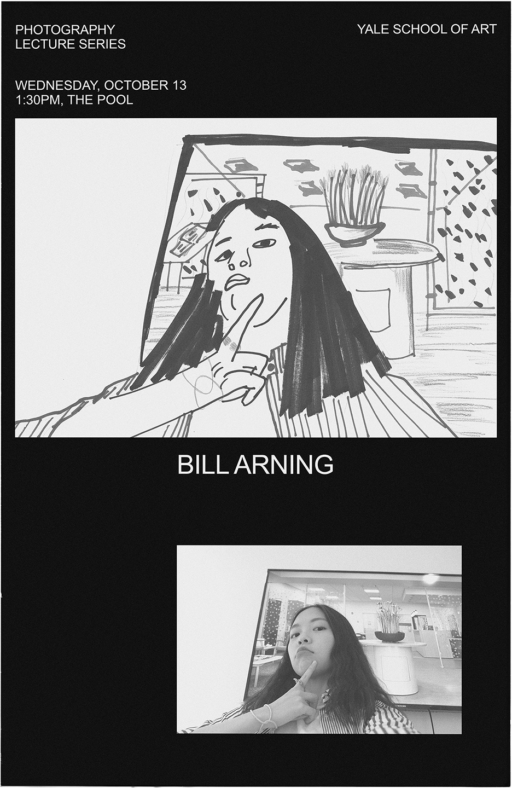

Hicham Faraj
I'm a designer currently based in NYC and a recent graduate from the Yale School of Art with an MFA in graphic design.
hicham00faraj@gmail.com
Compulsory Figures:
This is a display typeface based on compulsory figure exercises.
Using a drawing app installed on my phone I drew a full character
set mimicking the way figure skaters carve in ice variations of the
basic figure 8. The phone was delicately balanced on top of objects
I found lying around my desk in order to recreate the pressure on
figure skaters to maintain an elegant posture.

Any:
This is a series of three short video essays I made in collaboration
with Ingrid Chen in response the ubiquity of online tutorials and
unboxing videos where the hands are the only part of the subject’s
body visible in the frame.
Watch the videos
Yale Photo Lectures, Spring 2018:
Each poster for the Photography Lecture Series was typeset
in a different display typeface I designed in response to
the photographer’s body of work.
Forever:
This is an anthology on life extension and the possibility
of achieving immortality. I modified the page numbers
of the book to reflect the ways in which immortality alters
our relatively linear experience of time through reversal,
suspension and transformation.
Outside Unit A5:
This is a performance based project through which I attempted
to make a connection with my neighbor. At the time, I didn’t
know who they were. They always left their shoes outside
their door but I never saw them come in or leave their apartment.
Like a private investigator, I started looking at clues they’ve left
behind to uncover their identity...
... For two weeks straight, their doorway was empty and I
imagined that was going to be the case from now. So I installed
a shrine in the hallway commemorating the shoes. But eventually,
they reappeared leading me to uncover my neighbor’s identity.
In response, I printed my address on a t-shirt, wore it around
New Haven and hung it outside my door every night. I wanted
him to recognize me through my t-shirt, the same way I
recognized him through his shoes.
On the Line:I designed this website in collaboration with Rosa McElheny.
The essays are all written by Sahar Khraibani.
Visit the website
Shadows of a Spoon:
This is a set of spoons each based on the shape
of a shadow made using a flashlight and a plastic spoon.
After marking the outlines of the shadows, I extruded the
silhouettes on a 3D rendering program and five prototypes u
sing a 3D printer.
Yale Photo Lectures, Fall 2017:
This is a selection from the posters I designed for the Photography Lectures Series at Yale School of Art.

Feast:
Feast is the name I chose for the 2017 Second Year MFA Show
hosted at the Yale School of Art. The poster and the video
projected in the gallery window are based on an analogy
I drew between a student art show and a potluck.
Photo retouched by Guillaume Boucher
Paprika!
I designed two issues of Paprika!, the student-run broadsheet of the Yale School of Architecture. ‘Post-Ironic’ was edited by Lani Berry and Jeffrey Liu. ‘Presentations’ was edited by Cecilia Hui, Casey Furman and Dakota Cooley. I designed it in collaboration with Theresa Liu.
Distraction Marks:
This is a series of conditional digital drawings based
on photographs of dirty glass surfaces.
Sing a Song:
This is my cover of Celine Dion's 'My Heart Will Go On' from the movie 'Titanic'.
Watch the video